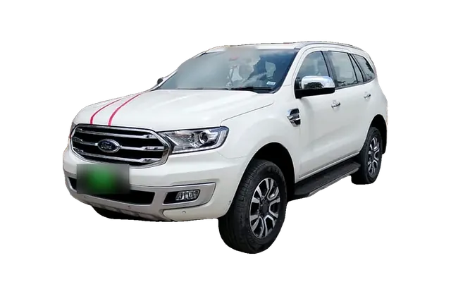
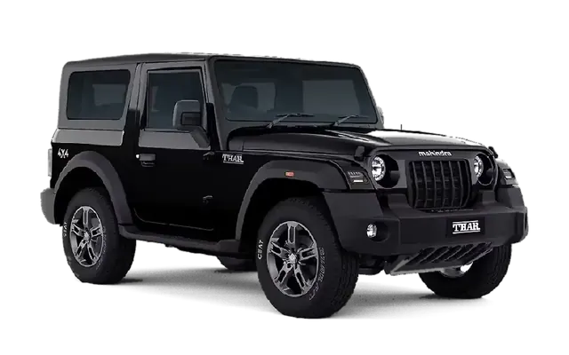

Journeys · from Gurugram & Delhi NCR
Go further.
Drive yourself.
Hills, desert, trails and temple towns, all within a day's drive. Self-drive or with a driver, delivered to your door.
Pick a terrain
Trip types


Road trip itineraries
Every direction
from Delhi.
Day-by-day plans, hills to desert. Distances and drive times are approximate, one way from Delhi, and depend on traffic, route and stops.
Delhi to Shimla road trip itinerary (3 days)
≈ 350 km≈ 7–9 hMar–Jun; Dec–Jan for snow

Best fitFord Endeavour or Mahindra TharView planClose
RouteNH44 to Chandigarh, then the Kalka–Shimla highway (NH5).
- Day 1
Drive up via Chandigarh and Kalka. Evening walk on Mall Road and the Ridge.
- Day 2
Kufri and Mashobra, or Naldehra for the pine forest and views.
- Day 3
Leave after breakfast; stop at Kasauli or Chail on the way down.
Key stops
- Mall Road
- The Ridge
- Kufri
- Naldehra
- Kasauli
Best season
Mar–Jun; Dec–Jan for snow
Delhi to Manali road trip itinerary (4 days)
≈ 540 km≈ 11–13 hMar–Jun, Oct; Dec–Feb for snow

Best fitMahindra Thar or Ford EndeavourView planClose
RouteNH44 to Chandigarh, then via Kiratpur, Mandi and Kullu.
- Day 1
Start before dawn, or break the drive overnight at Mandi.
- Day 2
Old Manali, Hadimba Devi Temple and the hot springs at Vashisht.
- Day 3
Solang Valley and the Atal Tunnel to Sissu. Rohtang Pass needs an online permit.
- Day 4
Naggar Castle and Kullu on the way out; drive back.
Key stops
- Hadimba Devi Temple
- Old Manali
- Solang Valley
- Atal Tunnel
- Naggar Castle
Best season
Mar–Jun, Oct; Dec–Feb for snow
Spiti Valley road trip from Delhi (5 days)
≈ 800 km to Kaza2 days to KazaJun–Sep
Best fitMahindra TharView planClose
RouteOut via Shimla and Kinnaur (NH5), back over Kunzum Pass to Manali.
- Day 1
Delhi to Shimla or Narkanda.
- Day 2
Into Kinnaur: Sangla or Kalpa.
- Day 3
Nako and Tabo Monastery.
- Day 4
Kaza, Key Monastery and Kibber.
- Day 5
Over Kunzum Pass, Chandratal detour if open, down to Manali. Drive home over the next day or two.
High-altitude roads with water crossings. Check current permit rules for the Kinnaur–Spiti border stretch and road status before you go.
Delhi to Dharamshala & McLeodganj road trip itinerary (3 days)
≈ 480 km≈ 9–11 hMar–Jun, Sep–Nov
Best fitFord Endeavour or Mahindra TharView planClose
RouteNH44 to Ambala, then via Una and Kangra.
- Day 1
Drive to Dharamshala; check in up in McLeodganj.
- Day 2
Tsuglagkhang (the Dalai Lama Temple), Bhagsu Waterfall and the cafés of Dharamkot.
- Day 3
HPCA Stadium and Norbulingka Institute, then drive back.
Key stops
- Tsuglagkhang
- Bhagsu Waterfall
- Dharamkot
- HPCA Stadium
- Norbulingka
Best season
Mar–Jun, Sep–Nov
Delhi to Rishikesh & Haridwar road trip itinerary (2 days)
≈ 240 km≈ 4–6 hSep–Jun
Best fitFord Endeavour or Mahindra TharView planClose
RouteDelhi–Dehradun Expressway (fully open since April 2026), or NH334 via Meerut.
- Day 1
Haridwar: Har Ki Pauri and the evening Ganga aarti.
- Day 2
Rishikesh: Ram Jhula area, Triveni Ghat; rafting runs outside the monsoon.
Delhi to Mussoorie & Landour road trip itinerary (3 days)
≈ 290 km≈ 5–7 hMar–Jun, Sep–Nov
Best fitFord Endeavour or Mahindra TharView planClose
RouteDelhi–Dehradun Expressway to Dehradun, then the hill road up.
- Day 1
Drive up; evening on Mall Road and Gun Hill.
- Day 2
Landour: Char Dukan, Lal Tibba and the quiet lanes. Kempty Falls in the afternoon.
- Day 3
Dhanaulti for the deodar forest, then drive back.
Key stops
- Mall Road
- Landour
- Lal Tibba
- Kempty Falls
- Dhanaulti
Best season
Mar–Jun, Sep–Nov
Delhi to Jim Corbett & Nainital road trip itinerary (4 days)
≈ 250 km to Corbett≈ 5–6 hNov–Jun
Best fitFord Endeavour or Mahindra TharView planClose
RouteNH9 via Hapur and Moradabad to Ramnagar.
- Day 1
Drive to Ramnagar, the gateway to Corbett.
- Day 2
Jeep safari. Book permits in advance on the official Corbett booking site; open zones vary by season.
- Day 3
Ramnagar to Nainital: Naini Lake and Mall Road.
- Day 4
Bhimtal or Sattal and Kainchi Dham, then drive back (≈ 320 km).
Chopta & Auli road trip from Delhi (5 days)
≈ 450–500 km2 days each wayApr–Jun, Sep–Nov; Jan–Mar for snow at Auli
Best fitMahindra TharView planClose
RouteTo Rishikesh, then up the Alaknanda valley via Rudraprayag.
- Day 1
Delhi to Rishikesh.
- Day 2
Rishikesh to Chopta via Rudraprayag and Ukhimath.
- Day 3
Trek to Tungnath and Chandrashila at sunrise.
- Day 4
Chopta to Joshimath and up to Auli.
- Day 5
Auli back down to Rishikesh; Delhi the next day.
Mountain roads here are prone to landslides in the monsoon (Jul–Sep). Check road status before you go.
Key stops
- Rudraprayag
- Chopta
- Tungnath
- Chandrashila
- Auli
Best season
Apr–Jun, Sep–Nov; Jan–Mar for snow at Auli
Delhi to Jaipur road trip itinerary (2 days)
≈ 270 km≈ 3.5–4.5 hOct–Mar
Best fitFord EndeavourView planClose
RouteDelhi–Mumbai Expressway from Sohna, then the Bandikui–Jaipur spur (open since July 2025).
- Day 1
Amber Fort in the morning, Jal Mahal, Nahargarh Fort for sunset.
- Day 2
City Palace, Jantar Mantar, Hawa Mahal and the bazaars, then drive back.
Key stops
- Amber Fort
- Nahargarh Fort
- City Palace
- Hawa Mahal
- Jantar Mantar
Best season
Oct–Mar
Delhi to Pushkar & Ajmer road trip itinerary (2 days)
≈ 400 km≈ 6–7 hOct–Mar
Best fitFord EndeavourView planClose
RouteNH48 via Jaipur and Kishangarh.
- Day 1
Drive to Pushkar. Ghats of Pushkar Lake, Brahma Temple, sunset from Savitri Temple.
- Day 2
Ajmer Sharif Dargah in the morning, then drive back.
Key stops
- Pushkar Lake
- Brahma Temple
- Savitri Temple
- Ajmer Sharif Dargah
Best season
Oct–Mar
Delhi to Jodhpur road trip itinerary (3 days)
≈ 600 km≈ 9–11 hOct–Mar
Best fitFord EndeavourView planClose
RouteNH48 to Ajmer, then on to Jodhpur.
- Day 1
Long drive; break at Ajmer or Pushkar if you like.
- Day 2
Mehrangarh Fort, Jaswant Thada, the Clock Tower market; Umaid Bhawan museum.
- Day 3
Drive back, or carry on to Jaisalmer.
Key stops
- Mehrangarh Fort
- Jaswant Thada
- Clock Tower
- Umaid Bhawan Palace
Best season
Oct–Mar
Delhi to Jaisalmer & Sam Sand Dunes road trip itinerary (5 days)
≈ 780 km2 daysOct–Feb
Best fitFord Endeavour or Mahindra TharView planClose
RouteTo Jaipur by expressway, then via Jodhpur.
- Day 1
Delhi to Jaipur.
- Day 2
Jaipur to Jodhpur; Mehrangarh Fort at sunset.
- Day 3
Jodhpur to Jaisalmer.
- Day 4
Jaisalmer Fort, Patwon ki Haveli, Gadisar Lake; evening at Sam Sand Dunes.
- Day 5
Kuldhara and Bada Bagh, then start the two-day drive home.
Key stops
- Jaisalmer Fort
- Patwon ki Haveli
- Gadisar Lake
- Sam Sand Dunes
- Kuldhara
Best season
Oct–Feb
Delhi to Udaipur road trip itinerary (4 days)
≈ 660 km≈ 10–12 hSep–Mar
Best fitFord EndeavourView planClose
RouteNH48 via Jaipur and Ajmer.
- Day 1
Delhi to Jaipur or Ajmer; overnight.
- Day 2
On to Udaipur; sunset at Lake Pichola.
- Day 3
City Palace, Jagdish Temple, boat on Lake Pichola, Bagore ki Haveli in the evening.
- Day 4
Kumbhalgarh Fort on the way out; drive back over one or two days.
Key stops
- City Palace
- Lake Pichola
- Jagdish Temple
- Bagore ki Haveli
- Kumbhalgarh Fort
Best season
Sep–Mar
Delhi to Agra road trip itinerary (2 days)
≈ 230 km≈ 3.5–4 hOct–Mar
Best fitFord EndeavourView planClose
RouteYamuna Expressway.
- Day 1
Taj Mahal at sunrise (closed on Fridays), Agra Fort, Mehtab Bagh at sunset.
- Day 2
Fatehpur Sikri on the way back.
Delhi to Mathura & Vrindavan road trip itinerary (2 days)
≈ 160 km≈ 3 hOct–Mar
Best fitFord EndeavourView planClose
RouteYamuna Expressway.
- Day 1
Mathura: Shri Krishna Janmabhoomi and Vishram Ghat.
- Day 2
Vrindavan: Banke Bihari Temple, ISKCON, Prem Mandir lit up in the evening. Expect big crowds around Holi and Janmashtami.
Key stops
- Krishna Janmabhoomi
- Vishram Ghat
- Banke Bihari Temple
- Prem Mandir
Best season
Oct–Mar
Delhi to Ranthambore road trip itinerary (3 days)
≈ 350 km≈ 5–6 hOct–Jun
Best fitFord EndeavourView planClose
RouteDelhi–Mumbai Expressway towards Sawai Madhopur.
- Day 1
Drive down; Ranthambore Fort and Trinetra Ganesh Temple.
- Day 2
Morning and afternoon safaris. Book on the official Rajasthan forest booking site; core zones close in the monsoon.
- Day 3
One more morning drive, then back.
Key stops
- Ranthambore National Park
- Ranthambore Fort
- Trinetra Ganesh Temple
Best season
Oct–Jun
Delhi to Neemrana & Alwar road trip itinerary (2 days)
≈ 120 km≈ 2–3 hOct–Mar
Best fitFord EndeavourView planClose
RouteNH48 (Delhi–Jaipur highway).
- Day 1
Neemrana Fort-Palace and the zipline over the Aravallis.
- Day 2
Alwar: Bala Quila and Siliserh Lake, then home.
Sohna & Damdama Lake day trip from Gurugram
≈ 25–30 km from Gurugram≈ 1 hOct–Mar; Jul–Sep for monsoon green
Best fitMahindra Thar or Ford EndeavourView planClose
RouteSohna Road (NH248A) south from Gurugram.
- Day 1
Damdama Lake and the Aravalli ridge in the morning; Shiv Kund at Sohna; back by evening.
Key stops
- Damdama Lake
- Shiv Kund, Sohna
- Aravalli hills
Best season
Oct–Mar; Jul–Sep for monsoon green
Photos: Wikimedia Commons contributors, CC BY / CC BY-SA / CC0, cropped and resized. Photo credits & licences
Road-trip FAQ
Before you go.
Can I take a self-drive car from Gurugram to the hills?
Yes. Both of our cars do outstation trips, self-drive or with a driver. Tell us your route when you book so we can suggest the right car.
Which car is better for a Delhi to Manali or Spiti road trip?
For Spiti, Ladakh and snow, the Mahindra Thar (4x4, high ground clearance). For families and long highway drives to Shimla, Jaipur or Udaipur, the 7-seater Ford Endeavour.
Do I need FASTag for these road trips?
Yes. FASTag is required at national highway and expressway toll plazas, including the Delhi–Mumbai and Delhi–Dehradun expressways.
Do I need a permit for Rohtang Pass or Spiti?
Rohtang Pass needs an online permit. Some border areas in Kinnaur, Spiti and Ladakh can need permits, so check the current rules before you go.
What is the fastest way from Gurugram to Jaipur now?
The Delhi–Mumbai Expressway from Sohna with the Bandikui–Jaipur spur, open since July 2025. It is roughly 3.5 hours from Gurugram without stops.
Which car for which trip
Two cars.
Different jobs.
Outstation, step by step
Booking a
road trip.
- 01
Send the plan
Destination, dates and pickup point on WhatsApp. Choose self-drive or with a driver.
- 02
Verify
Licence and ID, deposit and a digital agreement. We confirm the car and price on chat.
- 03
At your door
The car comes to your home, office or hotel, with a recorded 360° walkaround.
- 04
Hand back
Return walkaround on video. Deposit back once it checks out.
Road-trip checklist
Pack this.
Then drive.
Documents
- Your original driving licence
- A government photo ID
- Car papers (RC, insurance, PUC) checked at handover
Tolls & fuel
- FASTag is required at national highway toll plazas
- Fill up before long hill stretches; pumps get sparse
- Carry some cash for small towns and dhabas
Hill driving
- Use a lower gear on long descents, not just the brakes
- Give way to vehicles coming uphill on narrow roads
- Avoid mountain roads after dark
Permits & routes
- Rohtang Pass needs an online permit
- Border areas in Spiti and Ladakh can need permits; check before you go
- Tell us your route so we can confirm the right car
And closer to home